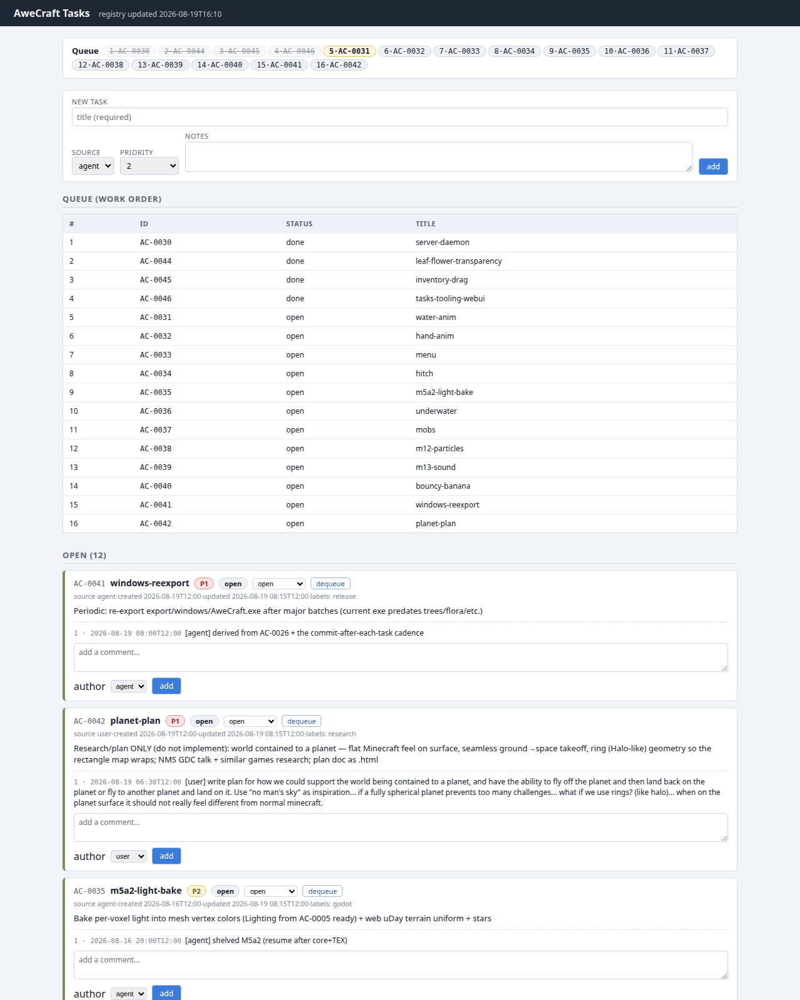
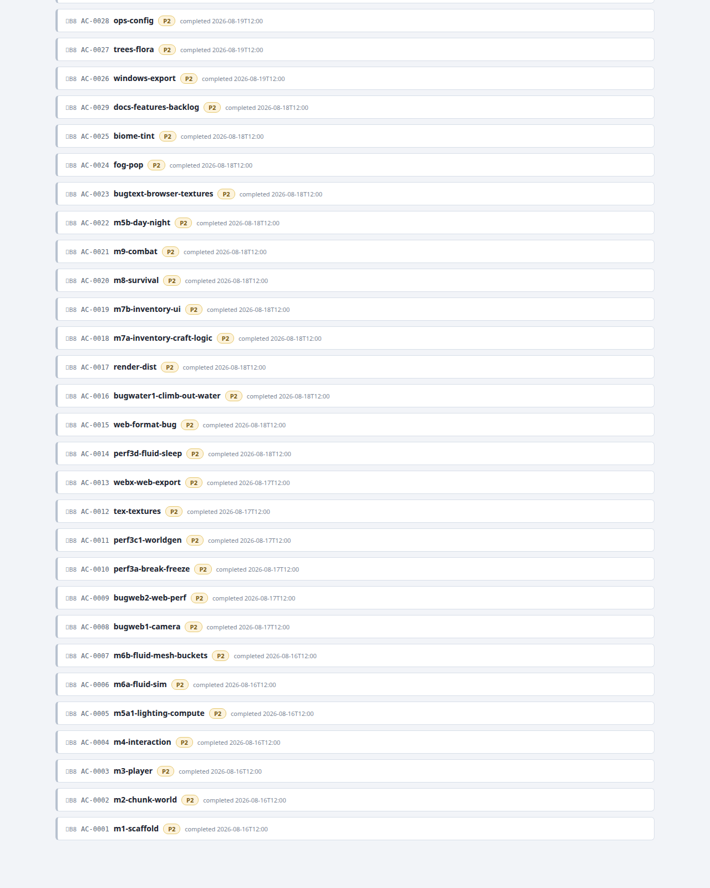

Modeled on the user's work todo system (.scratch/awe-jarvis/data/todo-backup/): shared
mutation layer (tasks_lib) + shared render layer (render), so the CLI and the webui
cannot drift. stdlib + pyyaml only; nothing outside tasks/ touched (one exception, noted below).
| file | role |
|---|---|
tasks/scripts/tasks_lib.py | load/save TASKS.yaml; next_id() (AC-NNNN); add / set_status / add_comment / queue_add / queue_remove / queue_top. Invariants in one place: done ⇒ completed_at set (leaving done clears it), comment ids increment per task, every mutation bumps task updated_at + meta.updated_at. Mutations return the dict; caller persists (one atomic write per edit). |
tasks/scripts/tasks.py | CLI: add / status / comment / queue add|remove|list / next. --file or env AWECRAFT_TASKS_FILE points at a copy. No markdown re-render (TASKS.md is gone; YAML is the only registry file). |
tasks/scripts/render.py | Shared render layer: TASKS.yaml → board HTML. Queue line (chips, done struck through, live top highlighted) + work-order table + Open/Blocked/Done sections. Open & Blocked are full cards (id/title/status/priority/created/updated/source/labels/notes + comment thread + links into the task folder); Done are the same full cards in collapsible <details> (3 most recent open). python3 tasks/scripts/render.py prints a static page (relative links, save next to tasks/); --out, --file, --base. |
tasks/webui.py | Board server, stdlib http.server, loopback-only 127.0.0.1:5180, no auth. GET / board, GET /tasks/<path> static task folders (spec/results/PNGs, path-traversal guarded, traversal → 403), POST /api/add|status|comment|queue_add|queue_remove — each loads the YAML fresh, mutates via tasks_lib, saves, re-renders via render, and returns the fresh board (JS swaps it in). Flags: --port N, --sandbox DIR (copies the YAML into DIR first; task folders stay served from the real tasks/ dir). Also GET /healthz for tests. |
tasks/scripts/test_tasks.py | Smoke test (jarvis pattern): fresh sandbox copies under .scratch/; CLI run as subprocesses against the copy; webui started sandboxed on a free port and driven over real HTTP; every mutation asserted twice — response OK and reload-from-disk shows it. In-process warnings.simplefilter("error") + -W error CLI check. Live YAML checksummed before/after. |
| gate | result | evidence |
|---|---|---|
| 1. smoke test on sandbox copy | PASS | 45/45 checks, exit 0, stderr empty (zero Python warnings), live YAML checksum unchanged. |
| 2. CLI demo vs live data (only allowed live mutations) | PASS | see outputs below. |
| 3. webui curl checks on 127.0.0.1:5180 | PASS | 200s + content checks below; test instance stopped afterwards (no servers left running). |
| 4. render.py dry-run | PASS | 53 kB board HTML; contains live queue top 5·AC-0031 (live chip + table row), open card AC-0041, done card AC-0046, blocked card AC-0043, task-folder links (spec.html, PNGs). |
$ python3 tasks/scripts/tasks.py comment AC-0046 "tooling shipped" --author agent Comment 4 added to AC-0046 $ python3 tasks/scripts/tasks.py status AC-0046 done AC-0046 -> done $ python3 tasks/scripts/tasks.py next next: AC-0031 water-anim [open] $ python3 tasks/scripts/tasks.py queue list | head -6 1 AC-0030 [done] server-daemon 2 AC-0044 [done] leaf-flower-transparency 3 AC-0045 [done] inventory-drag 4 AC-0046 [done] tasks-tooling-webui 5 AC-0031 [open] water-anim 6 AC-0032 [open] hand-anim
Invariants verified on disk afterwards: AC-0046 status: done, completed_at: 2026-08-19T16:10,
comment 4 [agent] tooling shipped, meta.updated_at bumped, and zero
done-without-completed_at violations across all 46 tasks.
$ python3 tasks/webui.py --port 5180 --sandbox .scratch/ac0046-webui-live
task board: http://127.0.0.1:5180/ (loopback-only, no auth)
registry: .../.scratch/ac0046-webui-live/TASKS.yaml
SANDBOX: writes go to the copy above, never the live TASKS.yaml
$ curl -s -o /dev/null -w "%{http_code}" http://127.0.0.1:5180/
200
$ curl -s http://127.0.0.1:5180/ | grep -c 'data-id="AC-0046"' # AC-0046 card present
3
$ curl -s http://127.0.0.1:5180/ | grep -c "Queue (work order)" # queue section present
1
$ curl -s http://127.0.0.1:5180/ | grep -o 'qchip live">[0-9]*·AC-0031'
qchip live">5·AC-0031
$ curl -s -o /dev/null -w "%{http_code}" http://127.0.0.1:5180/tasks/AC-0046/spec.html
200
$ curl -s -o /dev/null -w "%{http_code} %{content_type}\n" http://127.0.0.1:5180/tasks/AC-0044/render_iso.png
200 image/png
The smoke test additionally exercised every mutation over HTTP (add/status/comment/queue round-trip) against a second sandboxed instance and re-read the YAML from disk to confirm persistence — all PASS, instance stopped cleanly, no warnings.


# CLI (live registry) python3 tasks/scripts/tasks.py add --title "Fix X" --source user --priority 1 --notes "why" python3 tasks/scripts/tasks.py status AC-0031 in-progress python3 tasks/scripts/tasks.py comment AC-0031 "root cause: ..." --author agent python3 tasks/scripts/tasks.py queue add AC-0031 # or: queue remove / queue list python3 tasks/scripts/tasks.py next # first non-done queue entry # Board webui (canonical start; loopback-only) python3 tasks/webui.py # http://127.0.0.1:5180/ python3 tasks/webui.py --port 5181 # alt port python3 tasks/webui.py --sandbox /tmp/ac-board # try it without touching the live YAML # in the browser: status select on any card, comment form, queue/dequeue buttons, new-task form # links on each card open the task folder's spec.html / <id>-results.html / PNGs # static board (no server): prints HTML; save next to tasks/ for relative links python3 tasks/scripts/render.py --out tasks/board.html # tests (sandbox copies under .scratch/, live file untouched) python3 tasks/scripts/test_tasks.py
text: + comment 2) were indented one space too deep
(YAML "expected <block end>" at line 676 / "mapping values are not allowed here" at line 1026).
Minimal repair: re-indented 13 lines by −1 space, no content changed — verified by
git diff (pure indentation) and by loading 46 tasks + all comment threads intact.
From now on, writes always go through tasks_lib, which re-serializes valid YAML.Other notes:
<details> with the 3 most recent open, so the 30+ finished tasks stay out of the way.next = first queue entry that is not done (the committed queue keeps finished entries
as the historical work order).--author prepends the registry's [user]/[agent] prefix
(only if not already present), matching every existing thread; webui comment form has an author select.tasks/ folder store even in --sandbox mode (folders are
read-only artifacts; only the YAML is redirected) — so spec/results/PNG links resolve in both modes..scratch/; curl/render evidence left there
(ac0046-*.html, ac0046-*.log, gitignored).Not done (per task rules): no git commit/push (coordinator), no changes outside tasks/,
canonical start stays python3 tasks/webui.py.